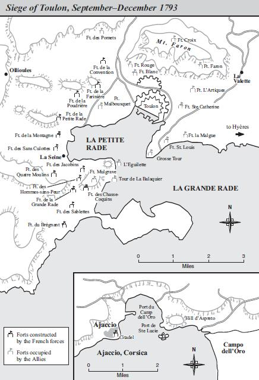

1
Ngày 15 tháng 8 năm 1769, tại thành phố Ajaccio thuộc đảo Corsica[2], Letizia Bonaparte, 19 tuổi, vợ một người quý tộc địa phương làm nghề luật sư, đang đi ngoài phố bỗng thấy đau đẻ, vội rảo bước về nhà thì sinh được một đứa con trai. Lúc bấy giờ, quanh Letizia không có ai nên đứa bé đã bị đẻ rơi. Thế là gia đình của Carlo Bonaparte, một luật sư nghèo ở thành phố Ajaccio, thêm một người. Carlo Bonaparte quyết định cho con mình hấp thụ nền giáo dục Pháp chứ không phải nền giáo dục Corsica. Khi đứa bé lớn lên, gia đình đông người ấy không có đủ tiền cho con ăn học, Carlo Bonaparte đã xin được học bổng cho con vào theo học ở một trường võ bị Pháp.
Đảo Corsica, sau nhiều năm thuộc về nước Genoa[3], đã nổi dậy dưới sự lãnh đạo của một địa chủ địa phương tên là Paoli, và năm 1755, đã đuổi được người Genoa ra khỏi đảo.
Lẽ dĩ nhiên, đó là một cuộc khởi nghĩa của tầng lớp tiểu quý tộc nông thôn và của nông dân được những người săn bắn, những người chăn cừu ở trên núi và dân nghèo ở một vài thành thị ủng hộ. Tóm lại, đó là cuộc khởi nghĩa của một dân tộc muốn thoát ra khỏi ách bóc lột hà khắc về thuế khoá và cai trị của một nước Cộng Hòa buôn bán. Cuộc khởi nghĩa thu được thắng lợi, và từ năm 1755, đảo Corsica sống độc lập dưới sự lãnh đạo của Paoli. Những tàn dư của xã hội tộc trưởng vẫn còn mạnh (đặc biệt ở trong nội địa đảo). Thỉnh thoảng, các thị tộc lại giao tranh ác liệt và dai dẳng. Tệ tục “thù truyền kiếp” rất phổ biến, thường được kết thúc bằng những trận chiến đấu khủng khiếp.
Năm 1768, nước Genoa đã bán lại cho vua nước Pháp Louis XV “quyền hành của mình” ở Corsica - thực tế quyền hành ấy đã bị thủ tiêu, và mùa xuân năm 1769, quân đội Pháp đã đánh bại quân của Paoli (việc này xảy ra vào tháng 5 năm 1769, ba tháng trước khi Napoléon ra đời). Đảo Corsica trở thành đất đai thuộc Pháp.
Như vậy, Napoléon đã sống những ngày thơ ấu trong một thời mà lòng dân đảo Corsica còn luyến tiếc nền độc lập chính trị đã mất đi một cách quá đột ngột, còn như một bộ phận của giai cấp địa chủ và tư sản thành thị thì tự nhủ rằng tốt hơn hết là hãy trở thành những thần dân trung thành và tự nguyện của nước Pháp. Bố Napoléon, Carlo Bonaparte, thuộc phái thân người bảo vệ đảo Corsica đã bị đưa đi đày, và căm ghét những người xâm lăng.
Ngay từ hồi còn nhỏ, Napoléon đã tỏ ra không nhẫn nại và nôn nóng. Sau này, khi ôn lại những kỷ niệm thời ấu thơ của mình, Napoléon nói rằng: Không ai bắt nạt được mình, hay gây gổ, hay đánh đứa này, chọc đứa khác và mọi đứa bé đều sợ cậu ta. Đặc biệt là Joseph, anh Napoléon, đã phải chịu đựng chuyện ấy nhiều.
Napoléon đánh anh, cắn anh, nhưng chính Joseph lại bị quở mắng, vì sau cuộc ẩu đả, Joseph chưa kịp hoàn hồn thì Napoléon đã đi mách mẹ. Napoléon kể thêm: Mưu mẹo đã giúp tôi như vậy đấy, nếu không mẹ tôi đã phạt tôi về tội hay cãi nhau và không bao giờ tha thứ những hành động gây gổ của tôi.
Napoléon là một đứa trẻ lầm lì và nóng tính. Tuy bà mẹ yêu con, nhưng dạy dỗ Napoléon cũng nghiêm khắc như đối với anh em của Napoléon. Gia đình sinh hoạt tằn tiện nhưng không túng bấn. Trông bề ngoài, ông bố là một người đàn ông tốt và bà Letizia, người chủ thật sự của gia đình, một người đàn bà quả quyết, nghiêm khắc và cần cù. Napoléon thừa hưởng của mẹ tinh thần ham làm việc và nếp sống trật tự nghiêm ngặt.
Đảo Corsica ở xa lục địa, nhân dân còn man rợ sống trong núi rừng, những cuộc xung đột kéo dài giữa các thị tộc, tệ nạn “thù truyền kiếp”, mối ác cảm rất khéo che giấu nhưng sâu sắc, dai dẳng của dân đảo đối với bọn xâm lược Pháp, tất cả những đặc điểm đó đã ảnh hưởng mạnh mẽ đến những cảm giác đầu tiên của cậu bé Napoléon.
Năm 1779, sau bao lần chạy chọt, Carlo Bonaparte mới gửi được hai đứa con lớn là Joseph và Napoléon sang Pháp theo học ở trường trung học Nobles; mùa xuân năm ấy, Napoléon được nhà trường nước Pháp cấp học bổng và chuyển sang học ở trường võ bị Brienne, một thị trấn nhỏ ở miền Đông nước Pháp. Lúc này, Napoléon 10 tuổi.
Ở Brienne, Napoléon là một đứa bé âu sầu, kín đáo, cáu kỉnh và hay giận dữ lâu, không gần gũi ai, không coi ai ra gì, không bạn bè, cảm tình với ai, rất tự tin mặc dầu tầm vóc nhỏ bé và còn ít tuổi. Người ta đã thử sỉ nhục, trêu chọc, chế giễu giọng nói địa phương của Napoléon. Cậu Bonaparte đã giận dữ ẩu đả, có khi được có khi thua, nhưng cũng đã làm cho bạn bè của cậu hiểu rằng những cuộc xung đột như vậy không phải là không nguy hiểm. Napoléon học giỏi lạ lùng, nghiên cứu đến nơi đến chốn sử Hy Lạp và sử La Mã, cũng rất say mê toán học và địa lý. Các giáo sư của trường võ bị ở cái tỉnh nhỏ đó không giỏi lắm về các môn khoa học mà họ giảng dạy nên cậu Napoléon phải bồi bổ thêm kiến thức của mình bằng cách đọc sách. Napoléon đọc sách trong những năm còn ít tuổi và sau này còn đọc rất nhiều và đọc rất nhanh. Lòng yêu quê hương đảo Corsica của Napoléon đã làm cho bạn bè người Pháp ngạc nhiên và xa lánh Napoléon: Lúc bấy giờ Napoléon còn coi nước Pháp như một chủng tộc xa lạ, là những kẻ xâm lược hòn đảo quê hương của mình. Napoléon chỉ liên lạc được với tổ quốc xa xôi của mình bằng thư từ của bố mẹ, anh em, vì gia đình không đủ tiền cho Napoléon về nhà nghỉ hè.
Năm 1784, 15 tuổi đã học xong và tốt nghiệp, Napoléon được gửi đi học ở trường võ bị École Militaire Paris, nơi đào tạo sĩ quan của quân đội lúc bấy giờ. Trường này có nhiều giáo sư rất giỏi, trong số đó có nhà toán học Monge và nhà thiên văn học Laplace. Napoléon say sưa học và đọc sách. Tại đó, Napoléon có sách, có thầy để học. Những ngày trong năm đầu, Napoléon đã gặp một điều không may: Vào học ở trường võ bị từ cuối tháng 10 năm 1784 thì đến tháng 2 năm 1785, bố Napoléon chết vì bệnh ung thư dạ dày cũng như sau này chính Napoléon đã bị. Hầu như gia đình không còn cách sống. Không thể trông mong được mấy vào người anh cả Joseph, một người bất lực và lười biếng, cậu học sinh sĩ quan 16 tuổi phải đứng ra chăm sóc mẹ và các em trai, em gái của mình. Sau một năm học ở trường võ bị Paris, ngày 30 tháng 10 năm 1785, Napoléon nhập ngũ, mang cấp hiệu thiếu uý và nhận công tác ở một trung đoàn đóng ở Valence.
Ở Valence, viên sĩ quan trẻ tuổi ấy sống một cuộc sống khó khăn. Hàng tháng, Napoléon gửi về cho mẹ gần hết số lương chỉ giữ lại đủ để trả tiền những bữa ăn đạm bạc của mình và không vui chơi giải trí gì. Trong ngôi nhà Napoléon thuê được một căn buồng, có một cửa hàng nhỏ bán sách cũ. Napoléon đã dành tất cả thời gian rỗi rãi của mình vào việc đọc sách do người chủ hiệu cho mượn. Napoléon không thích giao du, vả lại Napoléon ăn mặc quá tồi tàn đến nỗi không muốn và cũng không thể có một cuộc sống xã giao tối thiểu. Napoléon say mê đọc sách chưa từng thấy, khi đọc ông ghi chép và viết những ý kiến phân tích của mình dày đặc cả sổ tay.
Trước hết, Napoléon thích đọc các tác phẩm lịch sử quân sự, sách toán học, địa lý và các sách tả cuộc du lịch. Napoléon cũng đọc cả sách triết học. Chính vào thời kỳ này Napoléon bắt đầu nghiên cứu những tác giả cổ điển của Thế kỷ ánh sáng: Voltaire[4], Rousseau[5], d’Alembert, Mably và Raynal.
Thật khó mà xác định được vào thời kỳ nào thì xuất hiện ở Napoléon những dấu hiệu đầu tiên của lòng căm ghét đối với những nhà tư tưởng của cuộc cách mạng tư sản và thứ triết học rất đặc biệt của Napoléon. Dù sao, lúc này, người trung uý phó 16 tuổi vẫn học nhiều hơn là phê phán. Và đây nữa cũng là một điểm cơ bản của tinh thần Napoléon: Thời thanh niên, khi đọc sách cũng như khi tiếp xúc với người mới quen biết, Napoléon đều khao khát và nóng lòng muốn được hấp thu nhanh chóng và đầy đủ những điều mà mình chưa biết tới, những điều có thể góp phần bồi dưỡng tinh thần cho bản thân mình.
Napoléon cũng đọc các tác phẩm văn học bằng văn xuôi, văn vần; say mê cuốn tiểu thuyết “Nỗi Đau Của Chàng Werther" và một vài tác phẩm khác của Goethe; đọc cả tác phẩm của Racine, Pierre Corneille, Molière[6], các bài thơ lừng danh một thời bị gán là của Ossian, một thi sĩ hát rong người Écosse thời trung cổ (thực tế chỉ là một sự lừa nghịch trong văn học). Đọc những loại sách ấy xong, Napoléon lại lao vào sách toán học và các tác phẩm có liên quan đến các vấn đề quân sự, đặc biệt là pháo binh.
Tháng 9 năm 1786, Napoléon xin phép nghỉ dài hạn về quê ở Ajaccio để thu xếp sự sinh sống của gia đình. Khi chết, bố Napoléon có để lại một ít tài sản và một số công việc khá rắc rối. Napoléon đã giải quyết những công việc đó một cách tích cực và có kết quả.
Napoléon được phép nghỉ thêm đến giữa năm 1788, không được hưởng lương nhưng kết quả hoạt động của Napoléon để ổn định công việc gia đình đã bù đắp lại.
Trở về Pháp vào tháng 6 năm 1788, Napoléon đi theo trung đoàn lên đóng ở Auxonne, và lần này Napoléon ở trong trại, không ở nhà riêng nữa. Napoléon vẫn mê mải đọc tất cả các loại sách đã có trong tay và đặc biệt là các tác phẩm bàn về những vấn đề quân sự đã làm say mê các chuyên gia ở thế kỷ thứ XVIII. Một lần, bị phạt không được đi lại, Napoléon đã tìm được ở nơi nhốt mình một cuốn sách cũ nói về pháp luật đời cổ La Mã, viết theo lệnh của Hoàng Đế Justinian. Napoléon không những đã đọc hết cuốn đó, mà gần 15 năm sau, trong khi biên soạn Bộ Dân Luật, Napoléon còn đọc thuộc lòng cả bộ tuyển tập Pháp Luật La Mã. Việc này đã làm cho các nhà luật học lỗi lạc nhất ở Pháp ngạc nhiên. Napoléon quả có một trí nhớ phi thường.
Khả năng làm việc bằng trí óc một cách căng thẳng cũng như khả năng tập trung cao độ và lâu dài sức suy nghĩ của Napoléon đã thấy lộ rõ từ thời kỳ này. Sau này, nhiều lần Napoléon nói rằng: Nếu người ta thấy tôi luôn luôn sẵn sàng đối phó với mọi tình huống thì điều đó có thể giải thích như thế này: Trước khi làm bất cứ việc gì, tôi đã suy nghĩ kỹ trước khá lâu và dự kiến hết những gì có thể xảy ra. Chẳng phải là đã có một vị thần thánh nào thình lình hiện ra để gà cho Napoléon những tình huống dường như bất ngờ đối với những người khác, Napoléon nói thêm rằng “... Lúc nào tôi cũng làm việc, làm việc trong khi ăn, ở rạp hát, ban đêm...”. Khi nói đến thiên tài của mình thì lời lẽ của Napoléon thường đượm vẻ châm biếm hoặc giễu cợt và rồi bao giờ Napoléon cũng nhấn mạnh và rất nghiêm túc đến tinh thần làm việc của mình. Napoléon lấy làm tự hào về khả năng làm việc vô tận của mình hơn bất cứ năng khiếu nào khác mà tạo hoá đã ban cho một cách vô cùng rộng lượng.
Ở Auxonne, Napoléon viết một cuốn sách nhỏ nói về thuật bắn (về cách phóng đạn). Binh chủng pháo binh thật sự trở thành sở trường của Napoléon. Trong tài liệu của Napoléon ở thời kỳ này, người ta còn tìm thấy một vài bản thảo tác phẩm văn học, những công trình nghiên cứu có tính chất triết học và chính trị... v.v. Tư tưởng của Napoléon thường thấy đượm ít nhiều màu sắc của chủ nghĩa tự do và đôi khi còn lặp lại y nguyên một số tư tưởng của Rousseau, mặc dầu, nói chung, người ta không thể nào coi Napoléon như một tín đồ của tác phẩm Khế Ước Xã Hội[7].
Trong những năm này, có một điểm nổi bật: Ý chí và lý trí của Napoléon đã hoàn toàn khống chế được những ham mê về dục vọng. Napoléon không bao giờ ăn thích khẩu, thường xa lánh chỗ đông người, xa lánh giới phụ nữ, khước từ mọi cuộc vui chơi giải trí, làm việc không mệt mỏi, dành tất cả thời giờ nhàn rỗi vào việc đọc sách. Liệu Napoléon có cam chịu mãi với số phận của mình, số phận của một viên sĩ quan nghèo tỉnh nhỏ, xuất thân trong gia đình quý tộc nghèo người Corsica, luôn luôn bị lũ bạn bè quyền quý và bọn cấp trên quyền quý nhìn bằng con mắt khinh bỉ không? Trước khi Napoléon có thời gian để tìm được câu trả lời rõ ràng cho câu hỏi ấy và cũng chưa có cả thời gian để xây dựng kế hoạch cụ thể cho tương lại thì cái sân khấu mà Napoléon đang chuẩn bị vai trò để bước lên hoạt động đã bắt đầu lung lay, rồi cuối cùng tan vỡ và sụp đổ: Cách mạng Pháp bùng nổ.
Biết bao nhiêu nhà chép tiểu sử và viết tiểu sử của Napoléon có khuynh hướng gán cho nhân vật của họ có đức khôn ngoan siêu phàm, có bẩm năng tiên đoán việc đời, có lòng tin vào thiên chức của mình, muốn tìm xem trong viên trung uý pháo binh mới 20 tuổi đóng ở Auxonne này có tiên cảm gì về những lợi ích mà cuộc cách mạng nổ ra năm 1789 ắt phải đem lại cho chàng ta.
Thực tế, mọi việc đã xảy ra một cách giản đơn và tự nhiên hơn nhiều. Do vị trí xã hội của mình, Napoléon chỉ có lợi trong cuộc chiến thắng của giai cấp tư sản đối với chế độ phong kiến chuyên chế. Ở Corsica, ngay cả dưới thời thống trị của Genoa, bọn quý tộc (đặc biệt là tầng lớp quý tộc địa chủ nhỏ) không bao giờ được hưởng những đặc quyền, đặc lợi mà bọn quý tộc Pháp rất quý trọng. Dẫu sao chàng quý tộc nhỏ này, gốc gác ở một hòn đảo Ý kém văn minh, vừa mới bị người Pháp xâm chiếm, cũng không thể mong có được bước đường công danh rạng rỡ và nhanh chóng ở trong quân đội. Trong cuộc cách mạng 1789, nếu có cái gì có thể cám dỗ được chàng ta, thì chính là từ nay trở đi chỉ riêng có những khả năng của cá nhân là có thể giúp cho con người leo lên những bậc thang xã hội. Để nhảy vào cuộc, viên trung uý pháo binh Bonaparte không cần gì khác nữa.
Những suy tính thực tiễn đã thu hút tâm trí Napoléon. Lợi ích to lớn nhất mà Napoléon có thể thu được ở cách mạng là cái gì? Và ở đâu có điều kiện tốt nhất? Có hai câu trả lời: Một là ở Corsica, hai là ở Pháp. Lúc này, không nên đánh giá quá cao phạm vi và mức độ yêu đảo Corsica của Napoléon. Vào năm 1789, chàng trung uý Bonaparte chẳng còn nhớ tới chú sói con 10 tuổi đã từng đánh nhau rất hăng ở trong sân trường Brienne, mỗi khi bạn bè chế giễu gọng Corsica của mình.
Bây giờ chàng ta đã biết thế nào là nước Pháp và thế nào là đảo Corsica, đã có thể so sánh được hai nước này về mặt diện tích, và tất nhiên đã nhận ra được hai nước này không giống nhau đến mức độ nào. Nhưng vấn đề đặt ra ngay cả vào năm 1789, Napoléon cũng không thể hy vọng chiếm được ở nước Pháp cái địa vị mà ông có thể có được ở Corsica, nhất là nay cách mạng đã bắt đầu bùng nổ, mặc dầu ở Corsica, Napoléon có rất ít điều kiện thuận lợi. Hai tháng rưỡi sau khi ngục Bastille[8] bị phá, Napoléon xin phép nghỉ và trở về Corsica.
Trong số rất nhiều tác phẩm định viết, đúng vào năm 1789, Napoléon đã viết xong một bản tiểu luận nói về lịch sử đảo Corsica và trao bản đó cho Raynal để xin ý kiến, và Napoléon rất lấy làm thích thú về lời đánh giá tâng bốc của nhà văn đang nổi tiếng ấy. Chủ đề ấy đủ để chứng minh rằng Napoléon rất quan tâm đến hòn đảo quê hương của mình, ngay cả khi Napoléon còn chưa có khả năng để chuyên tâm hoạt động chính trị ở đó. Về tới nhà mẹ, Napoléon lập tức tuyên bố tán thành Paoli (Paoli đã trở về sau một thời gian dài bị đày) nhưng Paoli đã tiếp viên trung uý trẻ tuổi rất lạnh nhạt, và chẳng bao lâu, quả nhiên là mỗi người đi một con đường khác. Paoli mơ tưởng đến việc giải phóng hoàn toàn đảo Corsica khỏi ách đô hộ của người Pháp, còn Bonaparte thì cho rằng cuộc cách mạng mở ra những con đường mới cho sự tiến bộ của đảo Corsica và có thể - điều này mới chính cho sự nghiệp của bản thân.
Sau mấy tháng ở nhà không đạt được kết quả gì, Napoléon trở lại đơn vị, mang theo đứa em trai là Louis để giảm bớt một phần chi tiêu cho mẹ. Hai anh em ở Valence, nơi trung đoàn của Napoléon trở lại đóng quân. Từ nay trở đi, trung uý Bonaparte phải sống với em và nuôi nấng cho em ăn học bằng đồng lương quá ít ỏi của mình. Có bữa ăn trưa chỉ có mỗi một miếng bánh. Napoléon tiếp tục phục vụ quân đội một cách hăng hái và say mê đọc những tác phẩm về lịch sử quân sự.
Tháng 9 năm 1790, người ta lại thấy Napoléon ở Corsica, do Napoléon đã tìm cách để được thuyên chuyển về. Lần này, Napoléon vĩnh viễn cắt đứt quan hệ với Paoli đã công khai hoạt động tách đảo Corsica ra khỏi nước Pháp, điều mà Napoléon không muốn chút nào. Tháng 4 năm 1791, khi xảy ra cuộc xung đột giữa bọn giáo sĩ phản cách mạng, ủng hộ triệt để chủ trương tách đảo Corsica của Paoli với những đại diện của chính quyền cách mạng, Bonaparte đã ra lệnh bắn cả vào những đám đông bạo động xông vào đánh quân đội đặt dưới quyền chỉ huy của mình. Cuối cùng, bị chính quyền Cộng Hòa tình nghi vì âm mưu đánh chiếm một pháo đài (không có lệnh cấp trên), Napoléon lại sang Pháp và lập tức phải đến trình diện trước Bộ Chiến Tranh ở Paris để xác minh thái độ có phần nào mờ ám của mình ở Corsica. Đến thủ đô nước Pháp vào cuối tháng 5 năm 1792, Napoléon chứng kiến nhiều biến cố sôi nổi của cách mạng xảy ra vào năm đó.
Chúng tôi có những bằng cớ chính xác cho phép xét đoán sự phản ứng của viên sĩ quan 23 tuổi đó trước hai biến cố trọng đại xảy ra: Cuộc đánh chiếm cung điện Tuileries của quần chúng nhân dân vào ngày 20 tháng 6 và cuộc lật đổ chế độ quân chủ ngày 10 tháng 8 năm 1792. Tham gia những biến cố ấy bằng cách đứng ngoài vòng chứng kiến một cách bất ngờ nên hai lần ấy là dịp để Bonaparte biểu lộ tư tưởng của mình trong một nhóm bạn thân. Với họ, Bonaparte có thể tự do bộc lộ những ý nghĩ thật và tất cả bản chất của mình. Và những lời ông ta nói thật rõ ràng, không chút gì úp mở: “Chúng ta hãy đi theo bọn vô lại này”, Napoléon đã nói như vậy với Bourrienne lúc cùng đi với nhau trong phố, khi thấy quần chúng tiến về phía cung điện nhà vua ngày 20 tháng 6. Khi thấy vua Louis XVI, hốt hoảng trước cuộc biểu tình đầy uy thế, phải ra chào quần chúng ở bao lơn, đầu đội mũ đỏ Phrygian[9], Napoléon liền khinh bỉ nói: “Thằng hèn! Thế mà lại để cho bọn vô lại này vào được! Đáng lẽ phải dùng pháo quét đi độ bốn, năm trăm thằng là những thằng khác sẽ chạy dài!”. Tôi đã giảm nhẹ hình dung từ mà Napoléon dùng cho Louis XVI, vì tiếng ấy không thể nào in lên sách được. Ngày 10 tháng 8 (ngày dân chúng tiến công vào cung điện Tuileries, và ngày Louis XVI bị lật đổ), Napoléon vẫn lang thang ngoài phố và lại vẫn dùng hình dung từ trên để chỉ Louis XVI, đồng thời gọi những người nổi lên làm cách mạng là “lũ dân đen ghê tởm nhất”.
Đương nhiên, Napoléon không thể biết được rằng ngày 10 tháng 8 năm 1792, trong khi ông ta đang đứng giữa đám đông chứng kiến cuộc tiến công vào cung điện Tuileries và tống cổ Louis XVI ra khỏi ngai vàng thì chính sự việc ấy lại là vì lợi ích của bản thân ông ta, Bonaparte; cũng như quần chúng đang đứng vây quanh ông ta hân hoan chào mừng nền Cộng Hòa ra đời đâu có thể ngờ được rằng viên sĩ quan trẻ tuổi ấy, thân hình bé nhỏ, gầy gò, xoàng xĩnh trong chiếc áo dạ dài sờn rách, chìm biến trong đám đông quần chúng, lại chính là người sau này sẽ bóp nghẹt nền Cộng Hòa đó để trở thành Hoàng Đế độc tài. Có một điều đáng chú ý là, ngay ở đây, ta đã thấy bản chất Napoléon là thích dùng súng đạn, coi nó là phương tiện thích hợp nhất để trả lời những cuộc nổi dậy của nhân dân, Napoléon còn quay lại đảo Corsica lần nữa và đặt chân lên đất này vào đúng lúc Paoli trở thành người quyết tâm tách đảo Corsica khỏi nước Pháp và đã dâng mình cho người Anh. Trải qua bao gian khổ và nguy khốn, Napoléon mới đưa được mẹ và gia đình thoát khỏi đảo Corsica, trước khi quân Anh tới chiếm đảo. Việc xảy ra hồi tháng 6 năm 1793. Vừa trốn thoát thì nhà cửa của Napoléon liền bị đồng đảng của Paoli, những người chủ trương chia cắt, cướp phá.
Tiếp đó là những năm tháng đầy cùng cực. Cái gia đình đông người đó đã hoàn toàn bị phá sản và viên đại uý trẻ tuổi phải cáng đáng nuôi cả mẹ lẫn bảy anh em (Napoléon mới được thăng đại uý trước đó ít lâu). Lúc đầu, Napoléon để gia đình sống qua ngày ở Toulon, sau chuyển đến Marseille. Cuộc sống khó khăn túng thiếu của họ trôi đi tháng này qua tháng khác, không một tia hy vọng, thì bỗng đâu nếp sống quen thuộc cũ kỹ ấy bị gián đoạn một cách quá bất ngờ.
Ở miền Nam nước Pháp đã xảy ra một cuộc bạo động phản cách mạng. Năm 1792, bọn Bảo Hoàng ở Toulon nổi lên đánh đuổi và tàn sát các đại biểu của chính quyền cách mạng và cầu cứu hạm đội Anh đang tuần tiễu ở phía Tây Địa Trung Hải. Quân đội cách mạng vây thành Toulon ở trên bộ. Dưới sự chỉ huy của Carteaux, cuộc vây thành đã tiến hành yếu ớt và không thu được thắng lợi. Saliceti, uỷ viên quân sự, người đã trấn áp cuộc bạo động của bọn Bảo Hoàng ở miền Nam, là người Corsica, quen Bonaparte và đã cùng Bonaparte chống lại bọn Paoli. Bonaparte đến thăm bạn đồng hương của mình ở doanh trại trước thành Toulon và chỉ vẽ cho Saliceti cách duy nhất đánh chiếm thành và đuổi hạm đội Anh. Saliceti bèn cử viên đại uý trẻ tuổi ấy làm chỉ huy phó lực lượng pháo binh hãm thành.
Cuộc tiến công trong những ngày đầu tháng 10 bị thất bại, vì Doppet, người chỉ huy đánh thành hôm đó, đã ra lệnh rút lui vào lúc quyết định chiến trường, trái với ý định và lòng mong muốn của Bonaparte. Bonaparte tin chắc rằng nếu không có khuyết điểm tầm thường ấy thì thắng lợi đã về tay người Pháp. Bản thân Bonaparte cũng đã bị thương trong khi dẫn đầu quân xung phong. Sau một thời gian dài cự tuyệt và nhiều phen lần lữa của những người chỉ huy cấp trên, vì họ không tin lắm vào Napoléon, người sĩ quan trẻ tuổi vô danh và đột nhiên xuất hiện ở doanh trại - người chỉ huy mới là Dugommier đã cho phép Bonaparte thực hiện kế hoạch. Sau khi đã bố trí pháo theo ý đã định sẵn từ lâu và sau một trận pháo hỏa kinh khủng, Bonaparte liều mạng dẫn đầu binh sĩ xung phong đánh chiếm điểm cao Éguillette để bảo vệ cửa biển và bắt đầu mở đợt bắn phá hạm đội Anh.
Sau hai ngày pháo kích ác liệt, ngày 17 tháng 12, 7.000 quân Cộng Hòa xung phong đánh chiếm các pháo đài, nhưng đã bị đánh lui sau một trận kịch chiến. Nhưng Bonaparte đã kịp thời đến tiếp ứng cùng với một đội quân dự bị và nhờ vậy đã quyết định thắng lợi. Ngày hôm sau, tất cả những kẻ được quân Anh thoả thuận cho rút xuống tàu bắt đầu lũ lượt chạy trốn khỏi thành phố. Thành Toulon đầu hàng không điều kiện, quân đội Cộng Hòa tiến vào thành phố. Hạm đội Anh đã rút ra khỏi cửa biển.

.Sau trận chiến thắng này, tướng Dutiné báo cáo về Bộ Chiến Tranh ở Paris rằng, ông ta không đủ chữ để nói hết công trạng của Bonaparte. Ông ta nói về Bonaparte rằng đó là người vừa tài giỏi vừa thông minh và còn là người có thừa những đặc tính cần có. Dutiné còn nói thêm rằng những cái đó chỉ mới mô tả được phần nào người sĩ quan hiếm có ấy.
Dutiné nhiệt liệt tiến cử Bonaparte với Bộ Trưởng và đề nghị trọng dụng Bonaparte vì lợi ích của nền Cộng Hòa. Trong hàng ngũ quân đội ở Toulon, vai trò quan trọng của Bonaparte trong việc bố trí các khẩu pháo, tài chỉ huy cuộc vây thành và trận pháo hoả cũng như biết tiến công vào lúc quyết định đã được tất cả mọi người công nhận.
Chiến công ấy, trận đánh đầu tiên mà Napoléon chỉ huy và thu được thắng lợi, diễn ra ngày 17 tháng 12 năm 1793. Từ ngày đánh chiếm thành Toulon đến ngày 18 tháng 6 năm 1815, ngày mà Hoàng Đế thua trận rút khỏi chiến trường Waterloo đầy xác chết, là một sự nghiệp lâu dài và đẫm máu, kéo dài trong suốt 22 năm trời (có những lúc gián đoạn). Và sự nghiệp đó đã được nghiên cứu cẩn thận trong suốt thời kỳ chiến tranh giải phóng dân tộc ở Châu Âu, và những bài học của nó, cho đến tận bây giờ, vẫn còn là đối tượng của một sự nghiên cứu có hệ thống.
Trong suốt đời mình, Napoléon đã đánh cả thảy 60 trận lớn, nhỏ (nhiều hơn cả tổng số những trận của Alexander đại đế, Hannibal, Caesar và Suvorov cộng lại) và số quân đã tham gia vào các trận đánh đó còn đông gấp bội so với số quân trong các cuộc chiến tranh của các vị tiền bối về nghệ thuật quân sự của Napoléon. So với con số những trận đánh khổng lồ đã quyết định sự nghiệp của Napoléon thì chiến thắng Toulon thật quá tầm thường, song mặc dầu thế, chiến thắng Toulon vẫn mãi mãi chiếm một vị trí đặc biệt trong thiên anh hùng ca Napoléon. Nó đã làm cho mọi người lần đầu tiên chú ý tới Napoléon. Ủy Ban Cứu Quốc rất mực hài lòng về việc đã thanh toán được bọn phản bội Toulon và đã tống cổ được người Anh ra khỏi bờ biển.
Chiều hướng của tình hình báo trước triển vọng thanh toán nhanh chóng được hoạt động phản cách mạng của bọn Bảo Hoàng ở khắp miền Nam nước Pháp. Xưa nay Toulon vẫn được coi như một pháo đài kiên cố bất khả xâm phạm, đến nỗi khi Toulon thất thủ rồi mà nhiều kẻ vẫn không tin và cũng không tin rằng một gã vô danh tên là Bonaparte lại có thể đánh chiếm được thành. May mắn cho Napoléon là trong hàng ngũ những người vây thành có một người còn nhiều thế lực hơn Saliceti, đó là Augustin Robespierre, em trai của Maximilien, cũng dự trận đánh thành và đã tường thuật trong một bản báo cáo gửi về Paris. Kết quả là lập tức Napoléon Bonaparte được phong chức thiếu tướng, quyết định ký ngày 14 tháng 1 năm 1794. Lúc đó Napoléon 24 tuổi. Bước đi đầu tiên đã thành đạt.
Việc Napoléon hạ thành Toulon xảy ra vào thời kỳ mà phái Montagnards đang thống trị hoàn toàn Hội Nghị Quốc Ước[10], vào lúc mà phái Jacobin đang có ảnh hưởng rất lớn ở thủ đô và các tỉnh vào lúc mà nền chuyên chính vô địch của cách mạng, trong cuộc đấu tranh quyết liệt của mình, đã chiến thắng được thù trong giặc ngoài và đã đập tan được những cuộc phiến loạn của bọn Bảo Hoàng, bọn Girondin và bọn thầy tu ngoan cố.
Trong cuộc nội chiến ác liệt này, Napoléon Bonaparte không thể không thấy cần phải chọn một con đường giữa nền Cộng Hòa và nền Quân Chủ: nền Cộng Hòa sẽ có thể cho ông ta tất cả và nền quân chủ ắt sẽ tước tất cả và sẽ không tha thứ cho ông ta việc chiếm thành Toulon, cũng như việc ông ta vừa mới cho xuất bản cuốn sách Bữa Ăn Tối Ở Poke, trong đó Napoléon đã vạch rõ cho các thành phố nổi loạn ở miền Nam hiểu rằng tình thế của họ thật là tuyệt vọng. Mùa xuân và đầu mùa hạ, các uỷ viên Hội Nghị Quốc Ước ở miền Nam (đặc biệt có Robespierre em, chịu ảnh hưởng trực tiếp của Bonaparte) chuẩn bị xâm chiếm xứ Piémontais và miền Bắc nước Ý, để từ đó đe dọa nước Áo. Ủy Ban Cứu Quốc lưỡng lự, Carnot lúc đó phản đối kế hoạch ấy. Bonaparte tin rằng dùng Augustin Robespierre làm trung gian thì có thể thực hiện được ước mơ của mình: Được tham gia việc chinh phục nước Ý. Chính phủ Pháp lúc này chưa làm quen với tư tưởng cho rằng muốn chống lại sự can thiệp của Châu Âu phản cách mạng thì không phải là phòng ngự, mà phải trực tiếp tiến công vào Châu Âu và điều đó xem chừng quá táo bạo. Do đó, năm 1794, Napoléon không thực hiện được kế hoạch của mình. Một biến cố chính trị xảy ra bất ngờ đối với Napoléon, đã đảo lộn cả tình thế.
Để được đích thân trình bày kế hoạch tiến công nước Ý trước anh mình và trước Ủy Ban Cứu Quốc, Robespierre em đi Paris. Lúc đó đã vào đầu mùa hè, cần phải giải quyết vấn đề.
Sau khi đi Genoa để hoàn thành một nhiệm vụ mật có liên quan đến cuộc viễn chinh nói trên, Bonaparte về Nice. Chợt một tin bất ngờ từ Paris bay tới, bất ngờ không những đối với tỉnh Nice xa xôi ở miền Nam mà còn ngay cả đối với chính Paris nữa: Tin hết sức lạ lùng đó là ngày 9 Tháng Nóng[11], ngay giữa buổi họp của Hội Nghị Quốc Ước, Maximilien, Saint Juste, Couthon, và sau này cả đồng đảng của họ, đều bị bắt giữ. Ngày hôm sau, tất cả những người ấy đều bị đưa lên máy chém, không cần xét xử gì vì chính phủ đã tuyên bố một cách vô điều kiện rằng họ bị đặt ra ngoài vòng pháp luật. Lập tức người ta tiến hành lùng bắt trong khắp nước Pháp những ai có hoặc coi như có liên hệ mật thiết nhất với những nhà lãnh đạo chính của chế độ đã bị đánh đổ. Sau khi Augustin Robespierre bị hành hình, tướng Bonaparte liền ở vào tình trạng bị đe dọa. Không đầy hai tuần lễ, sau ngày 9 Tháng Nóng (27 tháng 7), Napoléon bị bắt (10 tháng 8 năm 1794) và bị áp giải về thành Antibes. Sau 14 ngày bị giam giữ, Bonaparte được tha: Lục soát các giấy tờ của Bonaparte, người ta đã không tìm thấy một bằng cớ gì để truy tố Bonaparte.
Trong suốt thời gian khủng bố của bọn đảo chính Thermidor, người ta thấy rất nhiều người có quan hệ ít nhiều với Robespierre hoặc những người thuộc phái Robespierre bị sát hại; còn Bonaparte thì có thể tự lấy làm vui sướng rằng mình đã thoát khỏi lưỡi máy chém. Chỉ biết rằng vừa bước ra khỏi nhà giam, Bonaparte đã lập tức nhận thấy rằng thời thế đã thay đổi và sự nghiệp của mình vừa mới bắt đầu thuận lợi nhường ấy mà nay đã dừng lại. Những kẻ mới lên còn tình nghi Bonaparte, vả lại, họ cũng chưa biết rõ Bonaparte lắm. Cuộc vây hãm thành Toulon chưa đem lại cho Bonaparte một tiếng tăm lớn về mặt quân sự. “Bonaparte à? Bonaparte là ai nhỉ? Đã làm việc ở đâu? Không ai biết hắn cả?” Đó là lời phản ứng của bố viên trung uý trẻ tuổi Junot, khi Junot báo cho bố biết tướng Bonaparte muốn chọn mình làm sĩ quan phụ tá. Chiến công Toulon đã bị quên mất rồi, hoặc dẫu sao thì nó cũng không còn được đánh giá cao như lúc đầu nữa.
Một chuyện không vui khác lại xảy ra. Đột nhiên ủy ban Cứu quốc Tháng Nóng chỉ thị cho Bonaparte phải đến Vendée dẹp bọn phiến loạn và khi đến Paris, tướng Bonaparte được biết người ta giao cho chỉ huy một lữ đoàn bộ binh trong khi Bonaparte chuyên về pháo binh và không muốn phục vụ ở bộ binh. Sau một hồi tranh luận gay gắt với Aubry, một uỷ viên của ủy ban, Napoléon xin từ chức.
Napoléon lại lâm vào thời kỳ túng thiếu mới. Viên tướng 25 tuổi này, về vườn vì bất bình với cấp trên, không một nguồn sống, đã buồn bã sống ở Paris qua mùa đông gay go năm 1794 - 1795 và sang xuân lại còn túng đói gay go hơn nữa. Dường như mọi người đã quên Napoléon. Cuối cùng, tháng 8 năm 1795, Napoléon được bổ nhiệm làm thiếu tướng pháo binh ở phòng Đồ Bản của Ủy Ban Cứu Quốc. Phòng Đồ Bản này là nét điển hình độc đáo đầu tiên của Bộ Tổng Tham Mưu do Carnot, trên thực tế là người tổng chỉ huy các lực lượng vũ trang Cộng Hòa, xây dựng. Ở đấy, Napoléon vẫn say mê đọc sách và tự học, đi thăm vườn cây nổi tiếng ở Paris, thăm Nhà Thiên Văn và đã chăm chỉ theo học lớp thiên văn của Lalande.
Lương bổng của Napoléon ít ỏi, thỉnh thoảng khi nào muốn ăn sáng, Napoléon chỉ còn có cách là đến thăm gia đình Pernod, vì gia đình này rất quý mến Napoléon. Nhưng, suốt trong thời gian cơ cực đó, không bao giờ Napoléon hối hận về việc đã xin từ chức, cũng không hề nghĩ đến việc quay trở lại phục vụ bộ binh, có lẽ vì muốn đạt được việc đó thì chỉ còn cách cầu xin qụy lụy. Nhưng dịp may lại đến với Napoléon: Chính thể Cộng Hòa lại cần đến Napoléon để chống lại cũng với những kẻ thù như hồi ở Toulon.
Năm 1795 là một trong những bước ngoặt của lịch sử các mạng Pháp. Cuộc cách mạng tư sản, đã lật đổ chế độ phong kiến và chuyên chế, sau biến cố ngày 9 Tháng Nóng đã tự làm mất vũ khí sắc bén nhất của mình là nền chuyên chính Jacobin, và khi đã nắm được chính quyền, khi đã đi vào con đường phản động, giai cấp tư sản lưỡng lự, đi tìm những phương sách và những hình thức mới thích hợp với sự giữ vững nền thống trị của nó. Suốt mùa đông năm 1794 - 1795 và mùa xuân năm 1795, sức phản động của giai cấp tư sản đã mạnh mẽ và táo tợn gấp bội hồi cuối mùa hạ cùng năm đó, tức là ngay khi vừa thủ tiêu nền chuyên chính Jacobin; và đến mùa xuân năm 1795 thì cánh hữu trong Hội Nghị Quốc Ước lại còn nói năng và hành động tự do, trắng trợn gấp bội hơn mùa thu năm 1794. Đồng thời, trong cái năm đói kém kinh khủng ấy, đã diễn ra hai cảnh hết sức trái ngược: Ở các vùng ngoại ô, thợ thuyền chết đói, các bà mẹ phải tự kết liễu cuộc đời mình sau khi đã dìm xuống nước hoặc đâm chết tất cả đàn con của họ, còn ở trong những “khu vực trung tâm” là cảnh sống đầy hoan lạc của giai cấp tư sản: Một bầy nhung nhúc những tên tài chủ, những tên đầu cơ, những tên buôn chứng khoán, những tên ăn cắp của công, lớn bé đủ hạng - ngóc đầu vênh vang đắc thắng sau khi Robespierre bị chết - miệt mài trong đời sống xa hoa, dâm dật.
Hai cuộc bạo động của thợ thuyền nổ ra từ các vùng ngoại ô và công khai chống lại Hội Nghị Quốc Ước Tháng Nóng, nhiều cuộc biểu tình vũ trang thị uy, và hai lần chuyển thành tiến công trực tiếp vào Hội Nghị Quốc Ước ngày 12 Tháng Nảy Mầm (1 tháng 4) và ngày 1 Tháng Đồng Cỏ (20 tháng 5) đều bị thất bại. Tiếp sau việc tước vũ khí vùng ngoại ô Saint Antoine là cuộc trấn áp khủng khiếp hồi Tháng Đồng Cỏ đã làm cho đông đảo quần chúng lớp dưới ở Paris không thể thống nhất hành động được trong suốt một thời gian dài. Sau hết, việc kích động khủng bố trắng trợn như vậy đã không tránh khỏi làm sống lại trong lòng giai cấp tư sản quân chủ “cũ” và giai cấp quý tộc những niềm hy vọng hình như đã bị tiêu tan: Bọn Bảo Hoàng ngỡ rằng thời cơ của chúng đã đến. Nhưng chúng đã tính lầm. Sau khi dập tắt phong trào của quảng đại quần chúng, giai cấp tư sản đã không tước vũ khí của các khu thợ thuyền ở ngoại ô, vì như vậy sẽ tạo điều kiện thắng lợi cho kẻ đang âm mưu lên ngôi vua nước Pháp, đó là bá tước xứ Provence, em trai vua Louis XVI đã chết trên máy chém. Giai cấp hữu sản Pháp có quan tâm gì đến chính thể Cộng Hòa, nhưng họ lại quan tâm nhiều đến cái mà cuộc cách mạng tư sản đã mang lại cho họ. Bọn Bảo Hoàng không muốn hiểu và cũng không thể hiểu những việc đã xảy ra vào những năm 1789 - 1795, không muốn và không thể hiểu được rằng chế độ phong kiến đã sụp đổ và không bao giờ trở lại nữa, rằng kỷ nguyên của chủ nghĩa tư bản đã mở ra, rằng cuộc cách mạng tư sản đã đào khoét một vực sâu không thể vượt qua được giữa thời kỳ cũ và thời kỳ mới của lịch sử nước Pháp, và những tư tưởng phục hưng của bọn chúng là rất xa lạ đối với đại đa số trong giai cấp tư sản thành thị và nông thôn.
Những lời đòi trừng phạt nghiêm khắc những người đã tham gia cách mạng không ngớt nổi lên trong những nơi tụ bạ của bọn xuất dương có thế lực ở London, ở Coblentz, ở Mitau, ở Hamburg, ở Roma. Sau vụ bạo động Tháng Đồng Cỏ và những tiếng nổ hung ác của “khủng bố trắng", chúng nhắc lại với một niềm hân hoan đầy ác ý rằng “bọn kẻ cướp Paris” đã bắt đầu chém giết lẫn nhau kịch liệt và rồi nhất định phái Bảo Hoàng sẽ chụp đánh bọn họ để nhanh chóng treo cổ tất cả bọn họ - bọn Thermidor và bọn Montagnards còn sót lại. Cái âm mưu ngu muội toan kéo lùi bước đi của lịch sử đã làm thui chột mọi ước mộng và đã dẫn mưu đồ của bọn Bảo Hoàng đến thất bại. Công bằng mà nói, người ta có thể kết tội và coi tất cả bọn Talliens, Frérons, Bourdons, Boissy d’Anglas, Barras - những kẻ đã lật đổ nền chuyên chính Jacobin và ngày 9 Tháng Nóng và đã đàn áp cuộc bạo động đáng sợ của “những người không quần chẽn”[12] vào bốn ngày đầu Tháng Đồng Cỏ - là những kẻ gian manh, những con thú vật ích kỷ, những tên tàn bạo hung ác, những quân vô sỉ, nhưng đứng trước bọn Bảo Hoàng họ đã tỏ ra không khiếp nhược. Khi được William Pitt tích cực giúp đỡ, bọn Bảo Hoàng đã vội vã tổ chức cho bọn quý tộc lưu vong đổ bộ vào Quiberon; không một chút do dự, những người lãnh đạo Hội Nghị Quốc Ước Tháng Nóng đã lập tức phái tướng Hoche cầm đầu một đội quân đến dẹp, và sau khi các lực lượng đổ bộ đã hoàn toàn tan rã, họ đã ra lệnh bắn ngay tại trận 750 tên Bảo Hoàng bị bắt làm tù binh. Ngay sau lần thất bại này, bọn Bảo Hoàng vẫn chưa cho thế là hết hy vọng. Cho nên chưa đầy hai tháng sau, bọn chúng lại nổi dậy và lần này thì ở ngay tại Paris. Lúc đó vào cuối tháng 9, sang đầu tháng 10 năm 1795, theo lịch cách mạng thì vào thượng tuần Tháng Hái Nho năm thứ IV.
Tình hình như sau: Hội Nghị Quốc Ước đã thảo xong hiến pháp mới. Theo hiến pháp đó thì năm viên đốc chính sẽ đứng đầu quyền hành chính, còn quyền lập pháp thì tập trung vào hai viện: Hạ Nghị Viện[13] và Thượng Nghị Viện[14]. Hội Nghị Quốc Ước chuẩn bị cho thi hành bản hiến pháp này và tự giải tán, nhưng nhận thấy rằng ý nguyện quay về chế độ quân chủ ngày càng biểu hiện rõ ở các tầng lớp trên của giai cấp “cựu” tư sản và lo rằng bọn Bảo Hoàng xảo quyệt sẽ không khéo lợi dụng tình trạng tư tưởng ấy để kéo thêm đông vây cánh của chúng vào Hạ Nghị Viện để có lợi trong những cuộc bầu cử. Do đó, trong những ngày cuối cùng của Hội Nghị Quốc Ước, nhóm lãnh đạo những người Thermidor, đứng đầu là Barras, đã đưa ra hai bản sắc lệnh quy định hai phần ba số đại biểu của Hạ Nghị Viện và của Thượng Nghị Viện đều bắt buộc phải lấy trong số những đại biểu hiện nay của Hội Nghị Quốc Ước, còn một phần ba thì tuỳ ý cử tri lựa chọn.
Lần này, ở Paris, bọn Bảo Hoàng không còn đơn độc nữa, chúng cũng không đứng đầu cả trong việc chuẩn bị cũng như trong khi thực hiện âm mưu. Vì vậy, vào Tháng Hái Nho, Hội Nghị Quốc Ước lâm vào tình thế đặc biệt nguy khốn. Một bộ phận khá quan trọng của bọn quý tộc tài chính và giai cấp đại tư sản của các “khu vực giàu có”, như người ta gọi, nghĩa là của các khu vực trung tâm của Paris, đã phản đối những sắc lệnh vũ đoán đó, những sắc lệnh đã được ban hành với mục đích rõ rệt và công nhiên là duy trì và kéo dài vô tận sự thống trị của phe đa số hiện thời ở trong Hội đồng Quốc ước. Rõ ràng là bọn chúng đã âm mưu hoạt động nhằm gạt giũ hoàn toàn bộ phận những người Thermidor hiện nay đã là trở ngại cho quan điểm hữu khuynh mạnh mẽ của những tầng lớp khá giả nhất ở thành thị cũng như ở nông thôn. Trong những khu vực trung tâm của Paris đột nhiên nổi lên chống lại Hội Nghị Quốc Ước vào tháng 10 năm 1795, cố nhiên là không thấy có nhiều những tên Bảo Hoàng tiêu biểu, những tên Bảo Hoàng chính cống mơ ước dòng họ Bourbon[15] quay trở lại ngay, nhưng tất cả chúng đều mừng quýnh khi nhìn chiều hướng của phong trào này, và đã hào hứng phỏng đoán cảnh kết thúc của các biến cố. Bọn “Cộng Hòa Bảo Thủ” của giai cấp tư sản Paris đang dọn đường cho việc trung hưng chế độ quân chủ, vì dưới con mắt chúng, bản thân Hội Nghị Quốc Ước Tháng Nóng xem ra đã quá cách mạng. Và ngay từ ngày 7 Tháng Hái Nho (29 tháng 9), khi bắt đầu nhận được những tin tức khẩn cấp về khuynh hướng của các trung tâm Paris, Hội Nghị Quốc Ước đã nhìn thấy nguy cơ hiện ra trước mắt. Như vậy, trong thực tế, Hội Nghị Quốc Ước sẽ dựa vào đâu trong cuộc đấu tranh mới này để giữ lấy chính quyền? Sau cuộc đàn áp dữ dội các vùng ngoại ô thợ thuyền cách đấy gần bốn tháng, sau một tháng tròn bắn giết, tàn sát những người cách mạng Jacobin, sau vụ tước vũ khí toàn bộ những vùng ngoại ô thợ thuyền một cách tàn nhẫn nhất, thì rất tự nhiên rằng Hội Nghị Quốc Ước không thể trông mong vào sự giúp đỡ tích cực của đông đảo quần chúng được.
Lúc này, thợ thuyền Paris đã thấy ở trong các uỷ ban của Hội Nghị Quốc Ước và ngay sau bản thân cái Hội Nghị Quốc Ước có rất nhiều kẻ thù tàn ác nhất của họ. Thợ thuyền Paris không thể có được ý nghĩ chiến đấu để bảo vệ quyền lực của hai phần ba uỷ viên của cái Hội Nghị Quốc Ước ấy trong Hạ Nghị Viện sau này. Và ngay bản thân Hội Nghị Quốc Ước cũng không thể nghĩ tới việc kêu gọi sự giúp đỡ của quần chúng lao động thủ đô đang căm ghét mình và chính mình cũng đang sợ họ. Chỉ còn có quân đội, nhưng về phía này, tình hình cũng không được tốt lắm. Thật ra, bất cứ lúc nào, bất cứ ở đâu, binh lính cũng không do dự bắn vào bọn lưu vong, cái lũ phản bội đáng ghê tởm, và bắn vào bạn bè lũ Bảo Hoàng và quân đội của chúng ở bất kỳ nơi nào mà họ bắt gặp, trong rừng Normandie, trên cồn cát ở Vendée, trên bán đảo Quiberon, ở Bỉ, ở biên giới Đức. Nhưng trước hết, phong trào Tháng Hái Nho đã không nêu khẩu hiệu: Trung hưng dòng họ Bourbon, mà ngoài mặt lại kêu gọi đấu tranh vì nguyên tắc chủ quyền của nhân dân đã bị những sắc lệnh của Hội Nghị Quốc Ước vi phạm và vì quyền tự do bầu cử những đại biểu chân chính của nhân dân, và sau nữa nếu binh lính là những người Cộng Hòa triệt để, chỉ có thể bị đánh lừa vì những khẩu hiệu xảo quyệt của phong trào Tháng Hái Nho, thì về phía các tướng lĩnh sự tình lại càng xấu hơn.
Chỉ cần nêu thí dụ tướng Manou, người chỉ huy quân đội đóng ở Paris. Liệu Manou có thích lính tập kích chiếm đóng ngoại ô Saint Antoine, đóng quân khắp nơi trong thành phố và đưa lên máy chém hàng loạt công nhân? Hắn dám làm và hắn đã làm, và tối ngày 4 Tháng Đồng Cỏ, sau khi đã chiến thắng được công nhân, quân của Manou, kèn trống đi đầu, diễu qua các khu trung tâm của thủ đô, và khi “công chúng lịch sự” đứng đầy đường nhiệt liệt hoan hô Manou và ban tham mưu của hắn, thì quả là đã có một sự tâm đầu ý hợp hoàn toàn giữa những kẻ đi tung hô và kẻ được tung hô. Chiều tối ngày 4 Tháng Đồng Cỏ, Manou có thể tự thấy mình là kẻ đại diện của các giai cấp hữu sản, giai cấp đã chiến thắng đông đảo quần chúng, là kẻ đứng đầu những kẻ no nê chống lại những người đói khát. Đối với Manou, đó là một việc rõ ràng, dễ hiểu và thú vị. Nhưng bây giờ đây, vào Tháng Hái Nho, Manou sẽ lấy danh nghĩa gì mà bắn vào cũng vẫn cái đám người lịch sự ấy, bọn người vừa mới đây đã nhiệt liệt hoan hô hắn và một đồng một cốt với hắn? Nếu hỏi giữa Manou và Hội Nghị Quốc Ước Tháng Nóng có cái gì khác nhau, thì cái khác chính là ở chỗ viên tướng này cực kỳ khuynh hữu và phản động hơn cả những người Thermidor phản động nhất. Các khu vực trung tâm đòi quyền tự do bầu một Nghị Viện bảo thủ hơn Hội Nghị Quốc Ước nhiều, vì thế mà tướng Manou không muốn bắn vào bọn Bảo Hoàng.
Trong đêm 12 Tháng Hái Nho (4 tháng 10), các thủ lĩnh của phái Tháng Nóng đã nghe thấy vang lên từ từ phía những tiếng reo hò mừng rỡ: Các đoàn người biểu tình, hân hoan náo nhiệt, tung ra khắp thành phố cái tin: Hội Nghị Quốc Ước đã từ chối chiến đấu; cuộc chiến đấu trong đường phố có thể tránh được; những sắc lệnh đã được bãi bỏ và sẽ được tự do tuyển cử. Về tin ấy, người ta chỉ đưa ra được một chứng cớ độc nhất sau đây nhưng rất xác thực và không thể chối cãi được: Viên chỉ huy các lực lượng vũ trang của một trong những khu trung ương (khu Lepelletier) là tên Deslalos nào đó đã đến gặp tướng Manou và Manou đã ứng thuận đình chiến với bọn phản động. Quân đội đã rút về doanh trại và thành phố đã rơi vào tay bọn phiến loạn.
Nhưng những nỗi cuồng vui ấy quá sớm, Hội Nghị Quốc Ước đã quyết định chiến đấu; tướng Manou bị cách chức và bị bắt ngay đêm 13 Tháng Hái Nho. Tiếp đó, Hội Nghị Quốc Ước cử Barras, một trong những nhân vật chính của phái Tháng Nóng, lên thay Manou chỉ huy các lực lượng vũ trang Paris. Cần phải hành động ngay đêm đó vì khi được tin Manou bị cách chức và bị bắt, và sau khi biết rằng Hội Nghị Quốc Ước nhất định chiến đấu, các khu nổi loạn đã bắt đầu không do dự và tức tốc tụ tập trên những đường phố gần Hội Nghị Quốc Ước để sáng hôm sau chiến đấu. Tên thủ lính của bọn nổi loạn là Riche de Serizi và ngay cả một số đông uỷ viên của Hội Nghị Quốc Ước đều cho rằng thắng lợi chắc chắn sẽ ngả về phía chúng. Nhưng bọn chúng đã tính lầm.
Những người đương thời thấy Barras là hiện thân của những thói xấu rất khác nhau và những dục vọng đê tiện nhất. Là một kẻ hưởng lạc, ăn hối lộ, sa đọa, cơ hội, xảo quyệt và vô đạo đức, Barras hơn hẳn những người Thermidor về đầu óc vụ lợi (và điều đó không phải là chuyện dễ). Nhưng Barras không phải là một kẻ hèn nhát. Dưới mắt của con người có trí thông minh sắc sảo ấy, ngay từ buổi đầu Tháng Hái Nho, Barras đã thấy rõ là phong trào mới chớm nở ấy có thể đưa nước Pháp tới sự phục hưng dòng họ Bourbon và điều đó đối với Barras là một sự đe dọa trực tiếp. Những người quý tộc đi theo cách mạng như Barras đều biết rất rõ mối căm hờn sâu cay của bọn Bảo Hoàng đối với những kẻ đã phản bội giai cấp.
Vậy nên không thể chậm trễ được, trong vài tiếng nữa là phải giao chiến ngay. Nhưng Barras không phải là nhà quân sự. Cần phải bổ nhiệm ngay một người tướng và ngẫu nhiên Barras đã nghĩ tới người thanh niên gầy còm vận chiếc áo khoác ngoài màu xám đã mất tuyết, người mà trong những ngày gần đây đã nhiều lần đến gặp Barras để xin nghỉ việc. Tất cả những điều mà Barras biết về con người đó chỉ vẻn vẹn có thế này: Một viên tướng thôi việc, nổi danh trong trận vây thành Toulon, nhưng ngay sau đó gặp một vài việc rắc rối và sống thiếu thốn vất vưởng ở thủ đô với đồng lương quá ít ỏi. Barras hạ lệnh cho đi tìm chàng thanh niên đó và dẫn về cho mình. Bonaparte tới và đã được hỏi ngay xem có muốn đi quét sạch cuộc bạo động không. Bonaparte xin ít phút để suy nghĩ. Không mất nhiều thời gian để suy nghĩ xem việc bảo vệ quyền lợi của Hội Nghị Quốc Ước đối với mình có gì là chống đối về nguyên tắc không, Bonaparte đã nhanh chóng nhận lời với điều kiện duy nhất là không ai được can thiệp vào những quyết định của mình. Bonaparte nói: “Tôi đã tuốt kiếm ra thì nó chỉ được tra vào vỏ khi nào trật tự đã được lập lại, dù phải trả bằng bất cứ giá nào”.
Tức thì Bonaparte được bổ nhiệm là phó cho Barras; sau khi tìm hiểu tình hình, Bonaparte đã nhận rõ được lực lượng của bọn nổi loạn và mối nguy cơ khủng khiếp đang đe dọa Hội Nghị Quốc Ước. Nhưng Bonaparte đã có một kế hoạch hành động rất rõ rệt và dựa vào việc sử dụng pháo binh một cách quyết liệt. Sau này, khi mọi việc đã xong xuôi, Bonaparte có nói với bạn là Junot (sau này là tướng và là công tước Abrantès) một câu trong đó Bonaparte quy kết rằng: Thắng lợi là do sự bất tài về chiến lược của bọn nổi loạn. Bonaparte nói thêm: “Nếu lũ ấy để Bonaparte chỉ huy thì Bonaparte đã đánh tan Hội Nghị Quốc Ước rồi”. Từ tảng sáng, Bonaparte đã điều pháo đến bố trí ở lân cận điện Tuileries.
Ngày lịch sử 13 Tháng Hái Nho đã bắt đầu như vậy; đối với cuộc đời của Bonaparte ngày ấy đã giữ được một vai trò quan trọng hơn hẳn cả chiến công đầu tiên của Bonaparte là việc hạ thành Toulon. Bọn nổi loạn tiến về Hội Nghị Quốc Ước và pháo binh của Bonaparte đã gầm lên chống lại bọn chúng. Cuộc tàn sát diễn ra đặc biệt kinh khủng ở tiền đình và nhà thờ Saint Roch, nơi tập trung đội dự bị của bọn nổi loạn. Lẽ ra ban đêm, bọn nổi loạn có thể cướp được pháo nhưng chúng đã bỏ lỡ cơ hội. Chúng chống cự bằng súng trường. Đến trưa thì mọi việc xong xuôi. Bỏ lại ở trên vỉa hè vài trăm xác chết và mang những tên bị thương đi theo, bọn nổi loạn bỏ chạy tứ tung và trốn về nhà; tên nào có thể rời khỏi Paris được thì đều đã đi ngay. Tối đến, Barras nhiệt liệt khen ngợi vị tướng trẻ tuổi và đã khẩn khoản xin cho Bonaparte được bổ nhiệm làm chỉ huy các Lực Lượng Vũ Trang Đối Nội (Barras đã xin từ chức ngay sau khi cuộc bạo động bị thất bại).
Trong chàng thanh niên tư lự và cau có ấy, điểm đặc biệt đã chinh phục được Barras và những nhà lãnh đạo khác là sự bình tĩnh hoàn toàn và tài quyết định nhanh chóng; với những đức tính đó, Bonaparte đã dùng một phương thức tác chiến mà cho đến tận lúc đó vẫn ít ai dùng tới, đó là dùng đại bác bắn vào giữa đám đông ở ngay trong thành phố. Về phương pháp đè bẹp những hoạt động ở đường phố ấy thì Bonaparte chính là tiền thân chính thống và trực tiếp của Nikolai đệ nhất, vì Nikolai là người đã tái diễn lại chiến công này vào ngày 14 tháng 12 năm 1825, duy chỉ có khác là với bản chất đạo đức giả của mình, Nga Hoàng đã tuyên bố rằng ông ta đã hãi hùng toan không dùng biện pháp đó, nhưng những lời khẩn khoản của hoàng tử Vazxinxicop đã thắng được đức độ và lòng nhân đạo gương mẫu của ông ta. Còn như Bonaparte thì không hề nghĩ đến thanh minh hoặc đổ trách nhiệm đó cho người khác. Bọn nổi loạn có trên 24.000 người vũ trang, trong khi đó Bonaparte có chưa đầy 6.000 người, nghĩa là bốn lần ít hơn. Ngoài đại bác ra, không còn hy vọng nào khác và Bonaparte đã đưa đại bác ra trận. Khi đã không thể tránh được cuộc chiến đấu thì phải đánh thắng bằng bất cứ giá nào. Napoléon đã luôn theo đúng quy tắc ấy một cách tuyệt đối. Napoléon không thích tiêu phí đạn đại bác, nhưng chỗ nào mà đạn giúp ích được thì Napoléon lại không bao giờ dè xẻn chút nào. Ngày 16 Tháng Hái Nho, Napoléon đã không tiết kiệm đạn trái phá, bởi vậy, tiền đình nhà thờ Saint Roch đã nhầy nhụa một đống thịt nát đẫm máu.
Tính chất kiên quyết triệt để trong chiến đấu là một trong những đặc điểm của Napoléon. Trong Napoléon có hai con người, một do lý trí thống trị, một do tình cảm thống trị. Không nên để cho người ta tưởng rằng Napoléon không có một trái tim nhạy cảm như những người khác. Theo Napoléon thì ông ta cũng là người có một tấm lòng khá tốt. Nhưng ngay từ thời niên thiếu, Napoléon đã cố gắng làm cho sợi dây tình cảm ấy trở thành câm lặng và hiện nay thì nó chẳng còn rung lên được một tiếng nào nữa, trong những phút thành khẩn rất hiếm có, Napoléon đã nói như vậy với Rodre, một trong những người được Napoléon ưa mến.
Khi phải tiêu diệt mọi kẻ thù dám táo bạo ngang nhiên khai chiến với Napoléon thì sẽ không bao giờ, tuyệt không bao giờ sợi dây đó còn rung động hoặc bắt đầu rung động ở trong con người Napoléon.
Ngày 13 Tháng Hái Nho đã giữ một vai trò to lớn trong thiên anh hùng ca của Napoléon. Tầm quan trọng lịch sử của việc đè bẹp cuộc phiến loạn Tháng Hái Nho là ở chỗ:
- Hy vọng của bọn Bảo Hoàng đặt vào một cuộc thắng lợi sắp tới và việc dòng họ Bourbon quay trở lại đã vấp phải một thất bại mới, nặng nề hơn cả thất bại ở Quiberon.
- Những tầng lớp trên của giai cấp tư sản thành thị đã tự nhận thấy là đã quá vội vã trong việc trực tiếp cướp lấy chính quyền bằng vũ lực. Ngoài ra, chúng đã quên mất rằng còn có những thành phần trong giai cấp tư sản thành thị và nông thôn đứng về phía nền Cộng Hòa và vẫn lấy làm lo ngại trước sự bành trướng quá nhanh chóng và quá trơ tráo của bọn phản động. Tên Riche de Serizi cầm đầu bọn nổi loạn đó là ai? Một tên Bảo Hoàng.
Vậy thì người ta nhìn thấy rõ được rằng những người nông dân có đất, nghĩa là cái khối giai cấp tiểu tư sản to lớn ở nông thôn, đã nhìn cuộc bạo động đó bằng con mắt nào? Họ đã coi việc trung hưng dòng họ Bourbon là sự sống lại của chế độ phong kiến, cái chế độ sẽ tước lại của họ những mảnh đất vừa mới mua được trong số đất đai tịch thu được của bọn quý tộc xuất dương và trong những tài sản tịch biên của Giáo hội.
- Cuối cùng, chứng minh một lần nữa rằng tính tư tưởng của những chiến dịch chống lại sự trung hưng đã tác động một cách đặc biệt mạnh mẽ vào quân đội và đông đảo quần chúng binh sĩ, những người mà người ta có thể hoàn toàn tin cậy trong cuộc đấu tranh chống tất cả những lực lượng trực tiếp hoặc gián tiếp, toàn bộ hay cục bộ câu kết với dòng họ Bourbon.
Đó là ý nghĩa lịch sử của ngày 13 Tháng Hái Nho. Còn đối với bản thân Bonaparte thì ngày 13 Tháng Hái Nho đã làm cho người ta lần đầu tiên biết đến tên tuổi của Bonaparte, không chỉ trong các giới quân sự (từ hồi Toulon, Bonaparte đã có phần nào nổi danh rồi), mà còn trong mọi tầng lớp xã hội, ngay cả ở những nơi từ trước tới nay chưa bao giờ người ta nghe nói đến Bonaparte. Bonaparte từ nay được coi như một người rất tài giỏi, rất quyền biến, đầy cương nghị và quyết tâm. Những nhà chính trị cướp được chính quyền từ những ngày đầu của Viện Đốc Chính[16] (nghĩa là từ năm thứ IV Tháng Hái Nho), trước hết là Barras, đều rất hâm mộ viên tướng trẻ ấy. Lúc đó, họ cho rằng trong tương lai, nếu còn phải dùng đến lực lượng quân đội để chống lại các cuộc khởi nghĩa của quần chúng, người ta vẫn có thể trông cậy vào Bonaparte.
Nhưng Bonaparte lại mơ ước khác. Bị các mặt trận ngoài nước hấp dẫn, Bonaparte mơ ước được làm chỉ huy một trong những đạo quân của nền Cộng Hòa Pháp. Mối quan hệ tốt của Bonaparte đối với Barras hình như đã làm cho những mơ ước ấy có thể thực hiện được chứ không như hồi trước Tháng Hái Nho, thời mà viên tướng 26 tuổi về vườn này còn phải chạy khắp Paris để xin việc. Chỉ trong một ngày mà tất cả đã đổi thay. Bonaparte đã là người chỉ huy đạo quân ở Paris, được viên đốc chính có quyền thế là Barras mến chuộng, và có khả năng sẽ được giữ một chức vụ độc lập tại một trong những đạo quân đang tác chiến.
Sau lần tiến chức đột ngột đó ít lâu, Bonaparte làm quen với vợ góa của viên tướng bá tước De Beauharnais bị hành hình trong thời kỳ khủng bố, và mê vợ viên tướng đó. Joséphine hơn Bonaparte sáu tuổi, trong đời đã trải qua nhiều cuộc tình duyên lãng mạn và không có những tình cảm đằm thắm đặc biệt với Bonaparte. Tất nhiên là những lý do thuộc về vật chất đã thúc đẩy Joséphine nhiều hơn: Từ ngày 13 Tháng Hái Nho, Bonaparte đã là một người rất nổi tiếng và đã có một cương vị quan trọng. Còn Bonaparte, vì say mê đắm đuối một cách bất ngờ nên đã cầu hôn và cưới Joséphine ngay. Trước đấy không lâu, Joséphine đã có những sự đi lại thân mật với Barras và cuộc kết hôn này lại mở rộng hơn nữa cho Bonaparte mối quan hệ với những nhân vật có quyền thế nhất trong chính phủ Cộng Hòa.
Trong gần 200.000 cuốn sách viết về Napoléon mà nhà thư mục học nổi tiếng Kircheisen và các chuyên gia khác đã thống kê, đã có một số lớn nói về những mối quan hệ của Napoléon với Joséphine và với phụ nữ nói chung. Để giải quyết cho xong dứt vấn đề này, tôi xin nói rằng: Dù là Joséphine, dù là vợ thứ hai của Napoléon là Marie Louise nước Áo, hay bà Rémusat, hay cô Mademoiselle George, hay nữ bá tước Waleska hay bất cứ một phụ nữ nào khác đã quan hệ mật thiết với Napoléon, không hiểu thấu cái bản chất bất trị, độc đoán, bẳn gắt và đa nghi ấy, đều đã không gây và thậm chí đã không dám gây nên một chút ảnh hưởng cụ thể gì đến Napoléon. Bonaparte đã ghét cay ghét đắng bà Stael, ngay cả trước khi ý thức chống đối về chính trị của bà đã làm Bonaparte nổi khùng; chỉ vì bà ta đã quan tâm đến chính trị và đã có nguyện vọng đi vào học vấn uyên thâm mà Bonaparte đã có ác cảm ngay với bà, vì theo ông ta, những cái đó đều là thừa đối với phụ nữ. Vâng lời và khuất phục hoàn toàn là hai đức tính cần thiết của người phụ nữ, không có hai đức tính ấy thì người phụ nữ đối với Napoléon, coi như không có. Vả lại, trong cuộc đời bề bộn rất nhiều công việc, thời gian đã không đủ cho Napoléon nghĩ nhiều đến tình cảm và dành nhiều thời giờ cho những khát vọng của trái tim.
Lần này đã đúng như vậy: Lễ cưới tổ chức ngày 9 tháng 3 năm 1796 thì hai hôm sau, ngày 11 tháng 3, Bonaparte từ biệt vợ và lên đường đi chinh chiến.
Một chương mới, dài và đẫm máu đã mở ra trong lịch sử Châu Âu.
Chú thích:
[2] Corse: Hòn đảo nằm ở Địa Trung Hải, một quận của nước Pháp.
[3] Gênes: hiện nay là một trong những thành phố chính ở miền Bắc nước Ý có cửa biển trông ra Địa Trung Hải, nổi tiếng về cảnh đẹp, có nhiều lâu đài, cung điện nguy nga, nhiều viện bảo tàng phong phú.
[4] François Marie Arouet dit Voltaire (1694-1778) nhà đại văn hào Pháp, người đã công kích kịch liệt chế độ độc đoán của bọn phong kiến và Giáo Hội thời ấy, là người giương cao ngọn cờ đấu tranh cho tự do cá nhân, chống lại chủ nghĩa cuồng tín và ngu dân của Giáo Hội và giáo sĩ thuộc tầng lớp trên.
[5] Jean Jacques Rousseau (1712-1778) văn hào Pháp, tác giả cuốn “Khế Ước Xã Hội” (1762), một trong những người đã đề ra Chủ Nghĩa Ánh Sáng Pháp.
[6] Molière, nhà soạn kịch nổi tiếng của chủ nghĩa cổ điển Pháp, tác giả những vở: “Lão hà tiện”, “Tartuffe”, “Tư sản quý tộc”...
[7] Khế Ước Xã Hội (Contrat social), một trong những tác phẩm chính của Jean Jacques Rousseau (1712-1788), rất có ảnh hưởng trong thời đại cách mạng tư sản Pháp. Trong tác phẩm này, Rousseau cho rằng Nhà Nước là một tổ chức do con người lập nên trên cơ sở khế ước nhằm quyền lợi chung của toàn thể xã hội và do đó đã đả kích kịch liệt vào lý thuyết quyền lực, do trời trao cho vua chúa.
[8] Nhà ngục Bastille ở thành phố Paris tiêu biểu cho chế độ quân chủ độc đoán, bị nhân dân Paris đánh chiếm ngày 14 tháng 7 năm 1789 (ngày nổ ra cuộc Cách Mạng Tư Sản Pháp)
[9] Loại mũ chỏm đỏ mà trước kia người xứ Phrygie thuộc Trung Á thường đội. Dưới thời đệ nhất Cộng Hòa Pháp, mũ này được coi như biểu hiện của tự do.
[10] Hội Nghị Quốc Ước (La Convention): hội đồng cách mạng lập năm 1792, thay thế cho Hội Nghị Lập Pháp, phế bỏ vua Louis XVI, tuyên bố Đệ Nhất Cộng Hòa và cai trị nước Pháp đến năm 1795 (26 tháng 10). Trước biến cố ngày 9 Tháng Nóng. Hội Nghị này phân ra làm ba phái: Phái Girondin, phái “Núi”, phái “Đồng Bằng”, sở dĩ có những tên gọi này vì trong hội trường, phái Jacobin ngồi ở những hàng ghế cao nhất, được gọi là phái “Núi”. Ở những hàng ghế thấp hơn là phái Girondin đại diện cho tư sản công thương nghiệp. Ở những hàng ghế thấp hơn nữa là những phần tử lưng chừng, không thuộc đảng phái nào, gồm ba phần tư số đại biểu trong Hội Nghị. Họ ngả về phe nào mạnh nhất, lúc đầu họ theo phái Girondin, về sau theo phái Jacobin. Người ta gọi họ là phái “Đồng Bằng” hay “Đồng Lầy” để chế giễu lập trường bấp bênh, nghiêng ngửa của họ.
[11] Theo lịch Cộng Hòa Pháp đặt ra ngày 24 tháng 11 năm 1793 thì mỗi năm bắt đầu từ ngày 22 tháng 9 và chia ra 12 tháng, mỗi tháng 30 ngày, cộng thêm năm ngày phụ dùng vào các ngày lễ Cộng Hòa. 12 tháng ấy lấy tên như sau: Tháng Hái Nho (Vendemisire), Tháng Sương Mù (Brumaire), Tháng Băng Giá (Frimaire), Tháng Tuyết (Nivôse), Tháng Mưa (Pluviôse), Tháng Gió (Ventôse), Tháng Nảy Mầm (Germinal), Tháng Hoa (Floréa), Tháng Đồng Cỏ (Prairial), Tháng Gặt (Messidor), Tháng Nóng (Thermidor), Tháng Quả.
[12] Những người không quần chẽn (les sans culottes), năm 1792, những người cách mạng Pháp không mặc quần chẽn và thay thế bằng quần dài ống và ống rộng, bọn quý tộc bèn gọi họ là những người không quần chẽn; đồng thời danh từ ấy cũng có nghĩa là những người cách mạng.
[13] Hạ Nghị Viện: Gồm 500 đại biểu, nên còn gọi là Viện 500. Cùng với Thượng Nghị Viện, Hạ Nghị Viện là cơ quan lập pháp do Hiến pháp năm thứ III quy định.
[14] Thượng Nghị Viện: Gồm 250 đại biểu, có nhiệm vụ thông qua những pháp luật do Hạ Nghị Viện khởi thảo.
[15] Bourbon: Dòng họ vua Pháp trị vì từ cuối thế kỷ XVI đến cách mạng tư sản Pháp năm 1789 và sau cách mạng (trong suốt những năm 1814-1830) với Louis XVIII và Chales.
[16] Viện Đốc Chính (Directoire): Chính phủ chấp chính ở nước Pháp từ năm 1795 đến năm 1799.